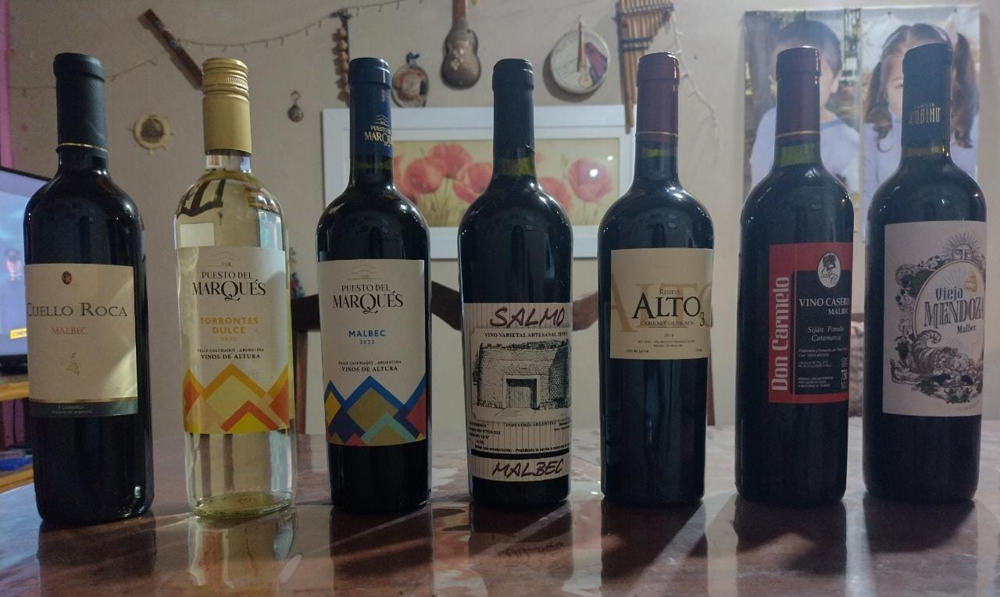

De la Puna Catamarqueña
Productos regionales
¿Te gusta viajar pero no podes? Te acercamos la provincia de Catamarca hasta tu casa
La provincia de Catamarca, cuenta con una variedad de paisajes, debido a su amplia paleta de relieves, y extensa geografía, las cuales se pueden apreciar en distintas épocas el año, siendo las más recomendadas, tanto la primavera como el invierno. Su mercado de turismo está en constante auge, y se vislumbra prometedor
Desde Catamarca con amor Vinos, aceite de oliva, lana, alfajores, nuecesQué tenemos para ofrecer
Productos Autóctonos

Lanas de primera calidad
Vinos de altura
Aceite de oliva